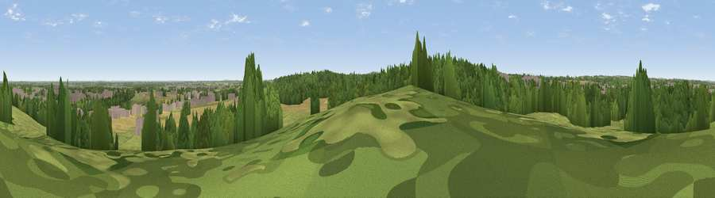

Viewpoint near Loversall
#26258 in England · top 42% of its area beats it · near LoversallThe view, rendered

A 360° render of this exact spot computed from the terrain model, tree cover and land cover — summer colours, afternoon light, calibrated against photographs of famous viewpoints. Real trees, hedges and buildings will differ in detail.
The panorama
Grey silhouette: terrain skyline in each direction (720 bearings, Earth curvature and refraction included). Dashed green: skyline with trees (+15 m) and buildings (+8 m) as obstacles. Blue strip: how far the ground is visible on each bearing.
Where the view opens
Wedge length = distance to the farthest visible ground on that bearing (vegetation-aware). Rings at 10, 25 and 50 km.
What fills the view
33% woodland · 25% cropland · 24% grassland · 18% built-up
Angular shares of the visible panorama (visual magnitude), not map area. Landscape diversity 0.60 (0–1 Shannon).
Key numbers
More beautiful places nearby
The staircase of upgrades: each row has a higher view potential than everything closer. Driving times are estimates from straight-line distance, calibrated against real road routing — check an actual route before setting out.
| Place | Direction | Drive | Score |
|---|---|---|---|
| Viewpoint near Clifton | SW · 4 km | ~10 min | 55.0 |
| Viewpoint near Clifton | SW · 5 km | ~10 min | 58.9 |
| Viewpoint near Cadeby | WNW · 5 km | ~11 min | 60.5 |
| Viewpoint near Maltby | S · 7 km | ~14 min | 70.8 |
| Viewpoint near Whitley | W · 23 km | ~38 min | 72.1 |
| Viewpoint near Oughtibridge | WSW · 23 km | ~38 min | 72.5 |
| Viewpoint near Wharncliffe Side | W · 24 km | ~39 min | 75.2 |
| Viewpoint near Greenfield | W · 55 km | ~77 min | 76.0 |
53.48414, -1.16774 · source: screening · position refined by local search. Computed location — check access rights before visiting.